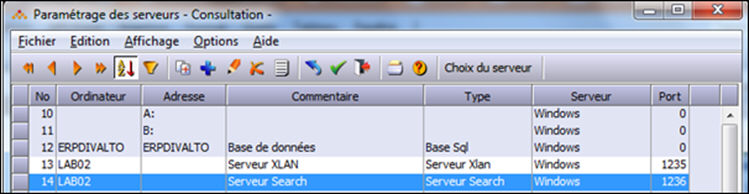

Si le nom du serveur correspond à son nom Netbios, l’adresse IP est facultative.
Si un serveur héberge plusieurs serveurs Search, il faut créer autant d’entrées dans la table qu’il y a de serveurs (chacun avec son numéro de port dédié). Dans ce cas, il faudra indiquer l’adresse IP du serveur car chaque serveur doit porter un nom différent dans la table.